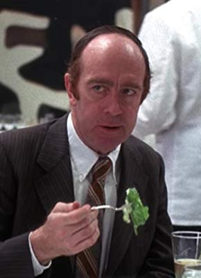

Meine Filme
Darsteller Ed Crowley 

| 3993 | Drei Tage des Condor, Die | 1975 | 16 | 117 | 1080p | 7.5 / 10  | Thriller | |
| 8669 | Einzige Zeuge, Der | 1985 | 12 | 112 | 1080p | 7.4 / 10 | Thriller | |
| 3683 | F/X - Tödliche Tricks | 1986 | 16 | 104 | 1080p | 6.7 / 10 | Action | |
| 8330 | Family Business | 1989 | 12 | 113 | 1080p | 5.7 / 10 | Drama | |
| 5768 | Network | 1976 | 16 | 121 | 1080p | 8.1 / 10 | Drama | |
| 12022 | Nur noch 72 Stunden | 1968 | 12 | 100 | 720p | 6.5 / 10 | Thriller | |
| 2388 | Serpico | 1973 | 12 | 130 | 1080p | 7.8 / 10 | Thriller |